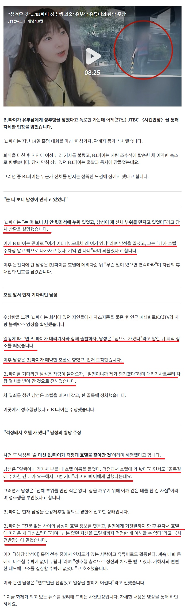

https://www.dogdrip.net/724890747
무죄 나온 내용은 여기

남자도 인정하는것
= 파이가 대리 불러서 호텔 가자 남자가 회식에서 집으로 가겠다고 하며 파이가 묵는 호텔로 먼저 가서 기다린뒤
대리기사에게 일행이라고 차량 열쇠 받아감
그리고 파이가 원해서 호텔 주차장으로 안들어가고 호텔 빠져나와 골목으로 감
솔직히 딱히 친분도 없는데 대리기사 부를때 호텔 이름 듣고 먼저 호텔로 가서 대리기사에게 자기가 챙기겠다고 하는게
존나 말도 안되고 의심스러운 상황이긴 함
진짜 걱정되서 챙겨줄정도의 각별한 사이면 보통 그냥 대리 부를때 같이 차 타고 호텔로 가지 않나
그걸 대리보내고 자기는 따로 뒤 따라 간다?
그리고 파이가 요청해서 호텔 주차장으로 안들어가고 호텔 빠져나와 골목길로 차를 가지고 간다?
하지만 의심스러운 상황임에도 무죄가 나온건 성추행을 한 영상이나 장면이 전혀 없고 오로지 파이의 증언뿐이라 무죄나온듯
몇년전이었으면 증언만으로도 유죄가 나올수 있었겠지만 지금 시대가 바뀌어서 증언만으로는 유죄 나오기 쉽지 않은듯
정말로 남자가 파이가 걱정되서 회식자리에서 먼저 집에 간다고 하고 파이가 호텔에 도착하기 전에 먼저 호텔로 가서
대리기사에게 차 열쇠를 받아 호텔을 빠져나와 골목길에 차대고 파이를 챙겨줬을 가능성(?)도 아예 0%는 아니니까
무죄추정의 원칙으로 무죄나온걸로 보임.

저게 진짜면 경찰 안부른게 이해 안가는데